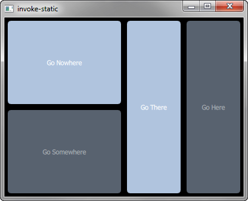

SCXML Invoke
Invokes a compiled nested state machine.

Invoke demonstrates how to use the <invoke> element with generated nested state-machines, where the SCXML file is compiled to a C++ class. The <invoke> element is used to create an instance of an external service.
Running the Example
To run the example from Qt Creator, open the Welcome mode and select the example from Examples. For more information, visit Building and Running an Example.
Invoking the State Machine
In statemachine.scxml, we specify a state machine with the name DirectionsStateMachine of type http://www.w3.org/TR/scxml/ to invoke:
<scxml
xmlns="http://www.w3.org/2005/07/scxml"
version="1.0"
name="DirectionsStateMachine"
initial="anyplace"
>
<state id="anyplace">
<transition event="goNowhere" target="nowhere"/>
<transition event="goSomewhere" target="somewhere"/>
<state id="nowhere"/>
<state id="somewhere">
<invoke type="http://www.w3.org/TR/scxml/">
<content>
<scxml name="anywhere" version="1.0">
<state id="here">
<transition event="goThere" target="there"/>
</state>
<state id="there">
<transition event="goHere" target="here"/>
</state>
</scxml>
</content>
</invoke>
</state>
</state>
</scxml>
Compiling the State Machine
We link against the Qt SCXML module by adding the following lines to the example's build files.
invoke.pro when using qmake:
QT += qml scxml
We then specify the state machine to compile:
STATECHARTS = statemachine.scxml
CMakeLists.txt when using cmake:
find_package(Qt6 REQUIRED COMPONENTS Core Gui Qml Scxml)
target_link_libraries(invoke PRIVATE
Qt6::Core
Qt6::Gui
Qt6::Qml
Qt6::Scxml
)
We then specify the state machine to compile:
qt6_add_statecharts(invoke
statemachine.scxml
)
The statechart directives STATECHARTS or qt6_add_statecharts invoke the Qt SCXML Compiler, qscxmlc, which is run automatically to generate statemachine.h and statemachine.cpp, which are then added appropriately as headers and sources for compilation.
Declaring the state machine as QML element
The state machine is declared as a QML element as follows:
struct DirectionsStateMachineRegistration { Q_GADGET QML_FOREIGN(DirectionsStateMachine) QML_NAMED_ELEMENT(DirectionsStateMachine) QML_ADDED_IN_VERSION(1, 0) };
Instantiating the State Machine
We instantiate the generated DirectionsStateMachine element in the MainView.qml file, as follows:
DirectionsStateMachine {
id: stateMachine
running: true
}